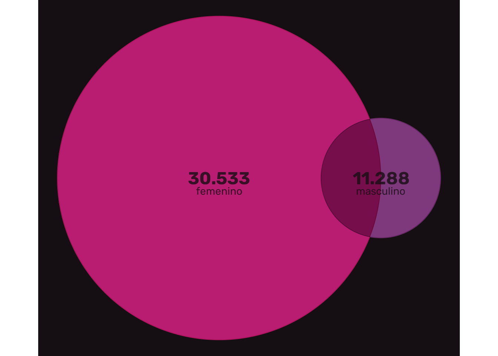
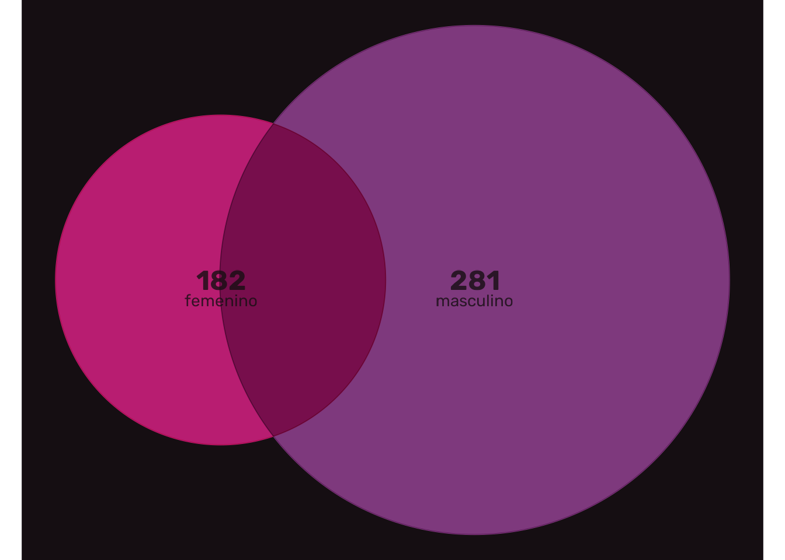
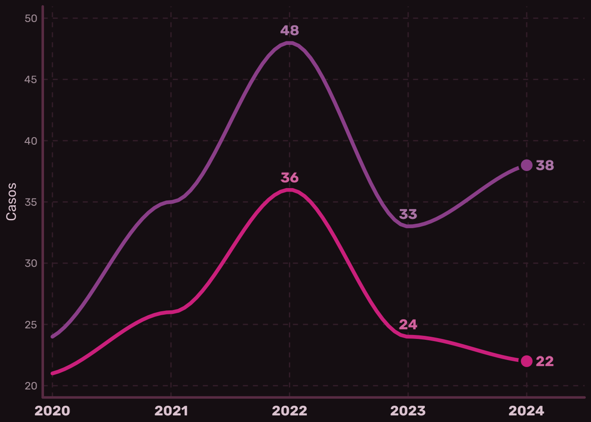
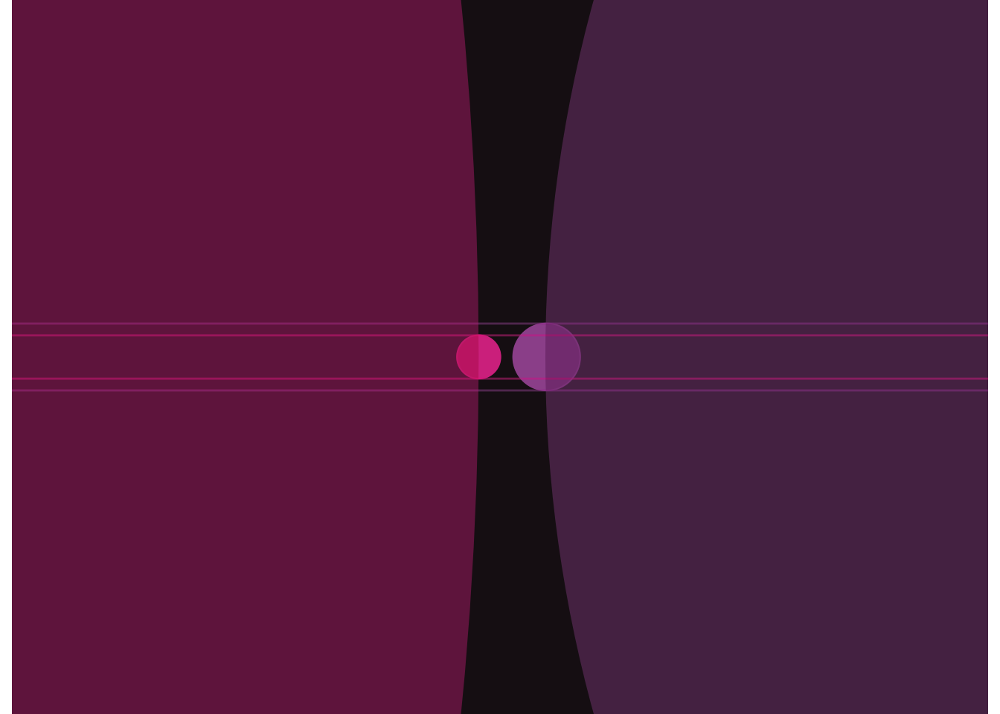

Suicidios en Chile según género
(2017–2024)
El Departamento de Estadísticas e Información de Salud (DEIS) del Ministerio de Salud de Chile, a través de su plataforma de datos abiertos, proporciona datos detallados sobre egresos médicos, que corresponden a casos de pacientes hospitalizados y sus desenlaces.
Los datos de egresos médicos incluyen el diagnóstico de las y los pacientes, su género, su ubicación, y si sobrevivieron o no a sus aflicciones. Según el diagnóstico de cada paciente, es posible identificar casos de lesiones autoinfligidas intencionalmente, interpretables como intentos de suicidio. En base al egreso con vida (alta médica) o sin vida (fallecimiento) de los pacientes, se pueden distinguir intentos de suicidio y suicidios consumados.
En esta plataforma se exploran estas estadísticas de suicidio en Chile, entre 2017 y 2024, y con perspectiva de género, visibilizando las diferencias que sufren mujeres y hombres.
Si estás pasando por un momento difícil, por favor busca ayuda.
- Línea de prevención del suicidio (Chile): llama al *4141 a cualquier hora del día.
- Fono de orientación en violencias de género: llama al 1455
Tendencia en los intentos de suicidio
En los últimos 6 años, y según los datos de egresos médicos, las estadísticas de intentos de suicidio en Chile han ido en aumento.
Entre los años 2017 y 2024, los intentos de suicidio en mujeres han aumentado en un 115%, pasando de 2.560 intentos en 2017 a 5.502 intentos en 2024, mientras que en hombres el aumento ha sido de 109%.

Entre los años 2021 y 2022, durante la pandemia, destaca un aumento en los intentos de suicidio en mujeres de un 36%.
Si consideramos la cantidad total de casos entre 2017 y 2024, vemos que las mujeres presentan una cantidad mucho mayor de intentos de suicidio que los hombres: 30.533 casos, que equivalen a una cantidad 2,7 veces mayor que los casos en hombres (11.288).

El gráfico anterior simboliza la diferencia entre ambas cifras mediante el diámetro de los círculos.
Mayor cantidad de víctimas fatales en hombres
Sin embargo, cuando analizamos las cifras de víctimas de suicidios consumados; es decir, intentos de suicidio con consecuencias letales entre 2017 y 2024, se presenta una mayoría de casos de hombres.

Se evidencia un total de 281 víctimas fatales en hombres, que significa una diferencia de 99 muertes por sobre la cantidad de víctimas mujeres (182).
Tendencia en suicidios consumados
La tendencia de los suicidios consumados es distinta a los intentos de suicidio. Comparando 2017 y 2024, los suicidios consumados han disminuido un -16% en hombres, mientras que en mujeres han aumentado un 29%.

Como se aprecia en el gráfico anterior, estas tendencias se ven influenciadas por la pandemia del Covid-19, que alteró los comportamientos sociales y tuvo un efecto en la salud mental de las personas.
Durante la pandemia, entre 2021 y 2022 ambos géneros presentaron fuertes aumentos en la cantidad de víctimas, de 37% y 38% en hombres y mujeres respectivamente.
Pero después de 2022, posterior al periodo de pandemia, se observa una tendencia a la disminución de los suicidios en ambos géneros: el suicidio entre 2022 y 2024 se reduce en un -26% entre los hombres y en un -64% entre mujeres..
Diferencias en perspectiva
Como podemos ver, el fenómeno presenta disparidades entre géneros complejas: las mujeres recurren al intento de suicidio en mucha mayor cantidad que los hombres, pero los hombres concretan el suicidio en mayor cantidad.
Esta gráfica enfrenta las realidades de mujeres (a la izquierda) y hombres (a la derecha), midiendo la cantidad de víctimas en círculos, donde los círculos centrales representan las víctimas fatales.

Por un lado, las mujeres presentan una mayor cantidad de intentos de suicidio entre 2017 y 2024, con 19.245 intentos más que los hombres.
Por otro lado, los hombres presentan una mayor cantidad de suicidios consumados entre 2017 y 2024, con 99 suicidios más que las mujeres.
Métodos según género
Las diferencias de género prevalecen también en los métodos de las lesiones autoinflingidas intencionalmente. Este gráfico muestra la cantidad de casos según el tipo de lesiones diagnosticado.
Los suicidios por ahorcamiento, armas de fuego, y objetos cortantes son más prevalentes en hombres, mientras que el uso de drogas o medicamentos de distintos tipos son más frecuentes en mujeres.

El tipo de lesión intencional más frecuente entre ambos géneros es el ahorcamiento, estrangulamiento o sofocación en hombres.
El fenómeno del suicidio es oscuro y complejo. Estas diferencias estadísticas expresan una realidad trágica, sufrida de maneras diferentes por hombres y mujeres.
Estas visualizaciones son sólo un intento por compartir datos sobre este fenómeno, con el fin de propiciar la reflexión sobre salud mental con perspectiva de género.
Si estás pasando por un momento difícil, o estás teniendo ideas suicidas, por favor busca ayuda. El suicidio nunca es la solución, y te aseguro que todo va a mejorar.
- Línea de prevención del suicidio (Chile): llama al *4141 a cualquier hora del día.
- Fono de orientación en violencias de género: llama al 1455